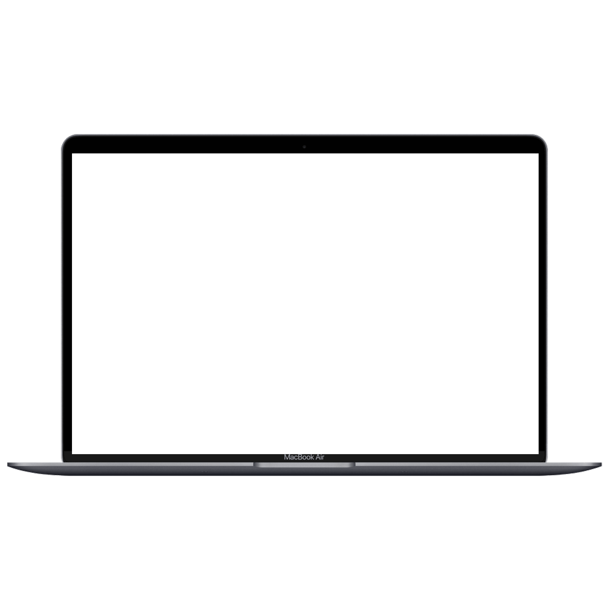
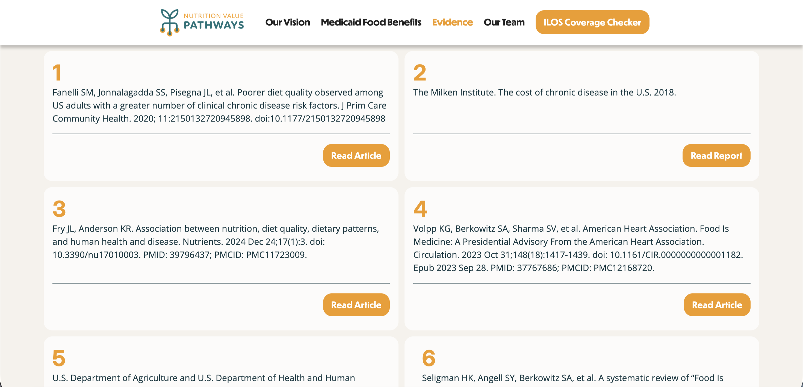
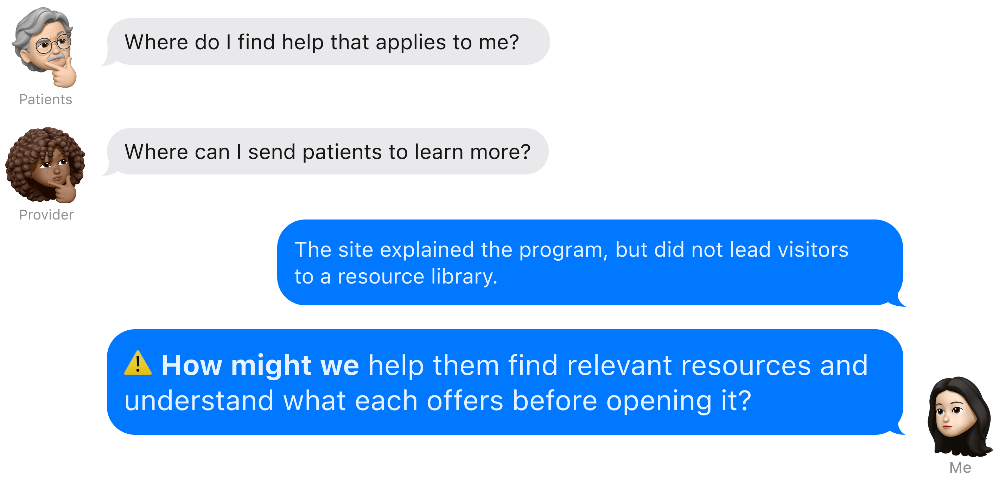
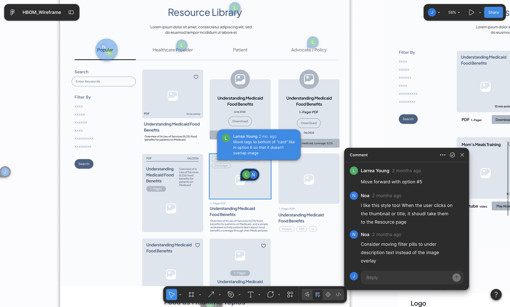
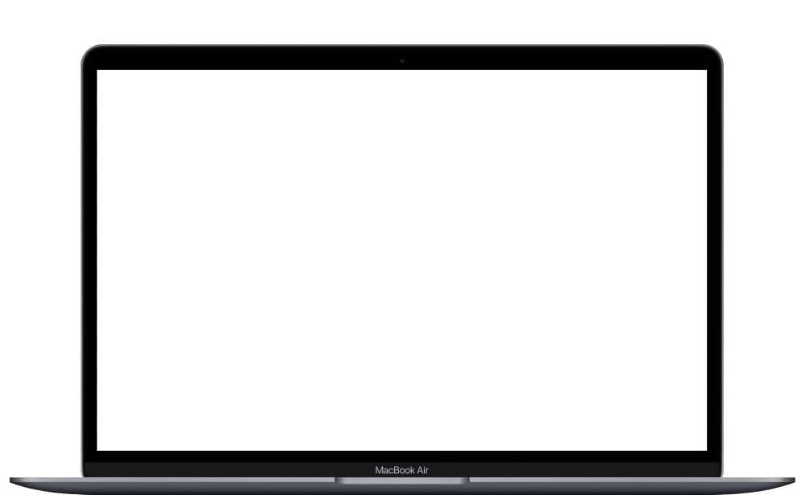

Nutrition Benefits Resource Hub
A web experience for finding resources related to food and nutrition benefits.

Problem
The existing site explained that nutrition benefits were available, but gave visitors no clear way to find resources relevant to them.
Solution
I designed a filterable resource hub that helps visitors browse and narrow the available resources.
Background
Nutrition Value Pathways
Healthy Behavior Optimization for Michigan (HBOM) developed Nutrition Value Pathways (NVP) as a University of Michigan initiative connecting people with nutrition benefits. NVP estimates annual healthcare savings of 85,000+ hospitalizations and $1,800+ per enrolled Michigander.
NVP explains In Lieu of Services (ILOS), Medicaid benefits that can provide nutrition support such as medically tailored meals, healthy food packs, and produce prescriptions. Its website also included a coverage checker that helped visitors check available benefits by plan and region.
I designed the resource hub for the NVP website.
Research
Identifying Problem
The NVP site explained ILOS coverage, benefit types, and the evidence behind the program. But after checking coverage, visitors had no clear place to find resources they could use or share.

Through interview content audit and secondary research, I reviewed how patients and providers might use shared health information. This identified two core use cases: patients looking for understandable information about food benefits, and providers looking for materials to learn from or share.

I was assigned to design the hub in Figma. After completing the information architecture and wireframes early, I proposed extending the work into a Webflow CMS implementation.
Research
Competitive Audit
I compared existing food and health resource sites to understand how they organize resources and support browsing.

The review showed that visitors needed a clearer starting point and more context before opening a resource. These findings informed the hub’s filters and resource-card design.
Ideation
Design decisions
Challenge: Visitors needed to narrow resources, while filters had to stay visible as categories grew.
I developed a side filter and a top filter, then presented their trade-offs to the project team in a comparative evaluation.

Result: The final layout combines both. A top tab handles user-type entry; a side panel supports topic and media type filtering below.

Challenge: The page needed to support both reading and requesting a resource without letting either compete with the other.
I explored two layouts for placing the request form alongside the resource and ran a comparative evaluation with the project team.

Result: The form sits below the content. Metadata was added to each detail page to build trust.

Challenge: Visitors needed enough context to judge a resource before opening it.
I designed eight card variations, each with a different information hierarchy and use case. After a preference testing with the project team, I developed the selected direction further.

Result: Key details are visible before the click.

Final Solution
Webflow build
Walkthrough from filtering to opening a resource.

Reflection
Post-Project Reflection
Constraints
Learning Webflow
This was my first Webflow project. I had to learn its classes and CMS while building the site.
Room for Improvement
Building trust earlier
For a health-related site, sources and update dates matter. I would plan these details earlier, starting with the first wireframes.
Next Steps
Growing the library
As HBOM adds more resources, I would test the filters and categories again to keep browsing simple.